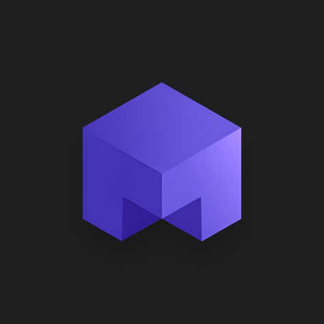
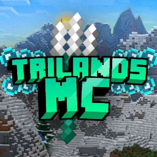
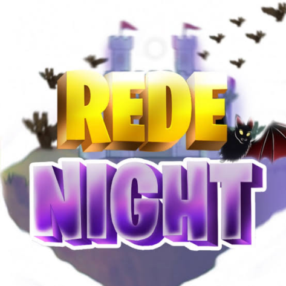

Mais de 30 servidores confiam e usam o Minescord ativamente!




Dispense o uso de outros bots no seu servidor para funções gerais, desde mostrar comandos de IP, Site, redes sociais até comandos de moderação e status de servidor! Com o Minescord você tem o seu próprio bot de forma idependente!
Valorizamos Acessibilidade, por isso o Minescord conta com mais de 3 tipos de idiomas diferentes, e no momento estamos trabalhando no suporte a mais 10 idiomas! Tudo sendo construído perfeitamente para você e seu servidor!
Com o Minescord todas mensagens são pre-modaldas, mas caso precise, você pode customizar tudo que precisa! Desde mensagens de painels até nomes e descrições de comandos e tudo de forma intuitiva em arquivos de lang e config!